★ 추천안 R · 한 화면입력은 모두 시즌 달력 한 화면에서 — 끌어서 연전, 눌러서 홈 구장, 공휴일은 표에서
2026-10-26 사용자 제안을 반영한 안입니다(대안 B의 「달력 한 장」 골격 + 추천안 A의 규칙·확인). 핵심 결정: 연전 묶음이 곧 경기일 — 묶음이 없는 날이 경기 없는 날(올스타 휴식기), 월요일에 묶음을 그리면 월요일 경기. 그래서 휴식기·휴식일 경기 표가 사라지고, 날짜에 붙는 입력은 홈 구장 지정 하나, 공휴일과 가중치는 왼쪽 표에서 적습니다. ①의 작은 단계 띠는 없습니다.
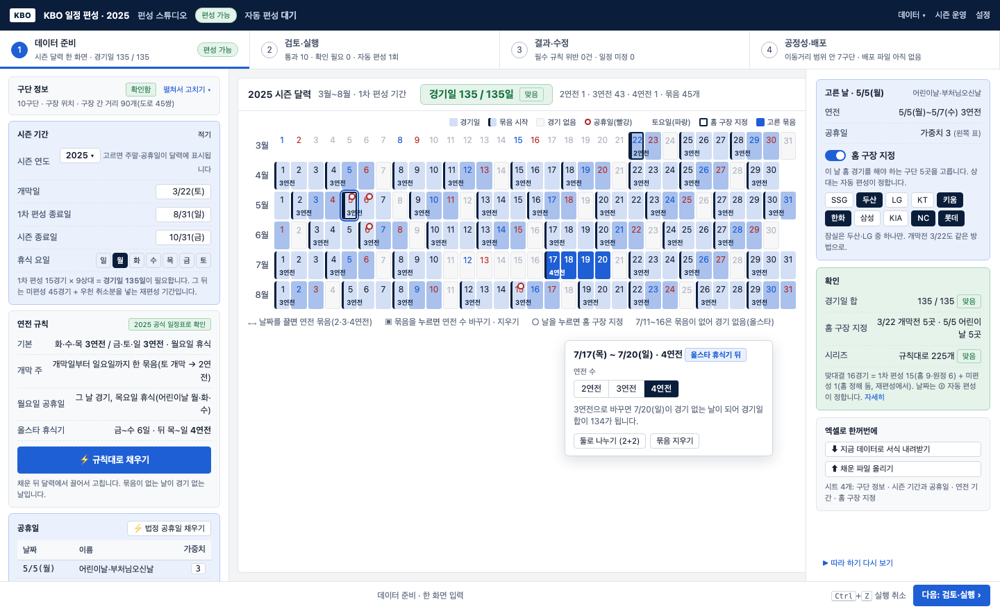
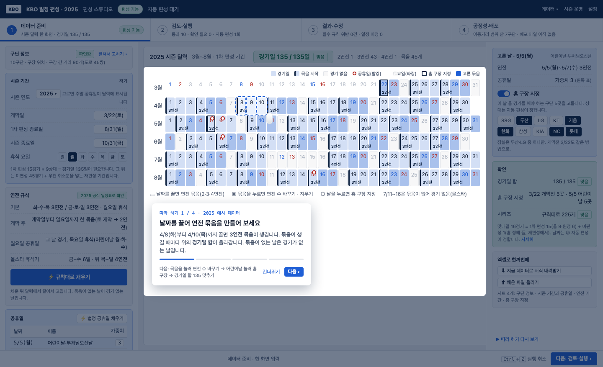
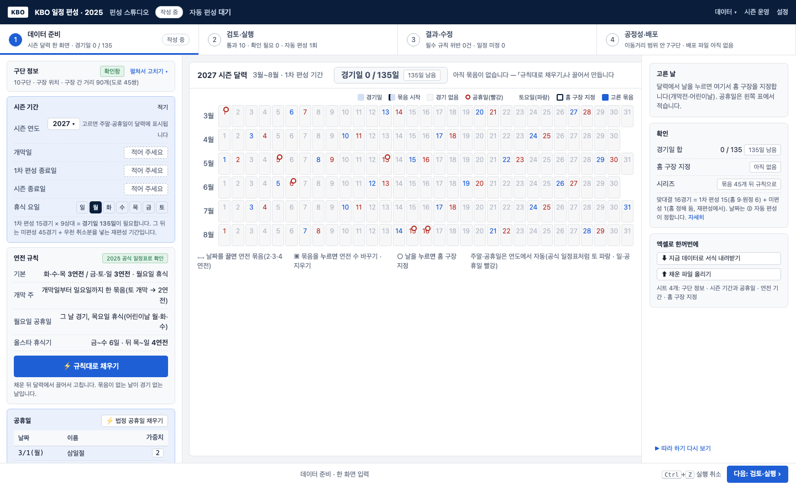
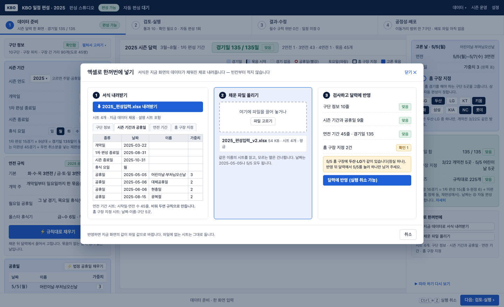
장점
- 입력 화면이 하나 — 「입력인지 확인인지」 질문 자체가 사라짐
- 표 넷(공휴일·휴식일 경기·휴식기·특별 경기)이 표 하나(공휴일)와 메뉴 하나(홈 구장)로 줆
- 묶음을 그릴 때마다 경기일 합이 바로 보여 135에 맞추는 과정이 눈에 보임
- 엑셀·튜토리얼이 같은 화면에 붙어 흐름이 끊기지 않음
단점 · 위험
- 연전 규칙은 2025 공식 일정표(PDF)로 확인함: 화·수·목 / 금·토·일 3연전, 월 휴식, 개막 토·일 2연전, 월요일 공휴일이면 그 날 경기·목 휴식, 올스타 휴식기 금~수 뒤 목~일 4연전 — 다른 해에도 같은지는 확인 필요
- 묶음 지우기(휴식기 만들기)가 끌기만큼 쉬워야 함
- 공휴일 가중치 기본값(2·3)은 KBO 확인 전까지 가정
- 코어 변경: 날짜별 가중치가 공정성 계산(calendar-gen·score·Java Calendar.holiday)까지 감
누구에게 · 구현
- 해마다 편성하는 담당자(엑셀 왕복) + 처음 보는 사람(따라 하기) 모두
- 1440에서 세 칸(330 · 달력 · 280)이 들어감, 달력 셀 약 24px
- 구현 순서: 묶음 달력(끌기·누르기) → 계수기 → 홈 구장 패널 → 공휴일 가중치(코어) → 엑셀 서식·읽기 → 따라 하기
지금9단계 — 무엇이 문제인가
구단 정보 → 시즌 기본 설정 → 공휴일 → 휴식일 경기 → 휴식기 → 연전 기간 → 시리즈 → 특별 경기 → 다음. 띠에는 아홉 칸이 똑같이 나란히 있지만, 사람이 적는 칸과 단추로 만들어지는 칸과 확인만 하는 칸이 섞여 있습니다.
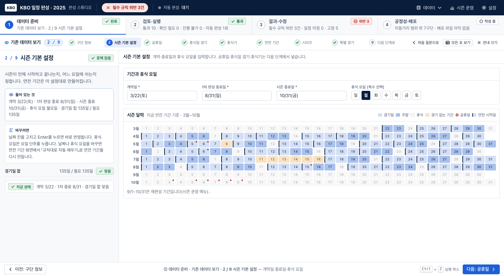
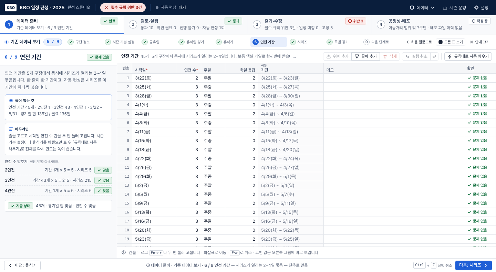
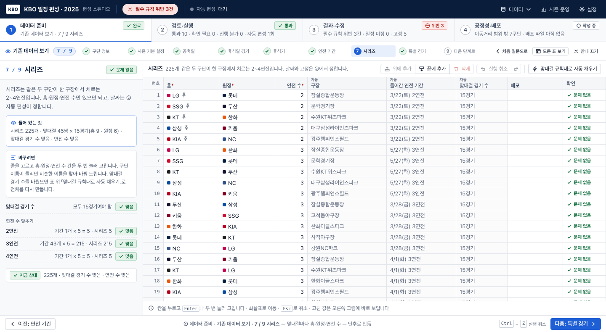
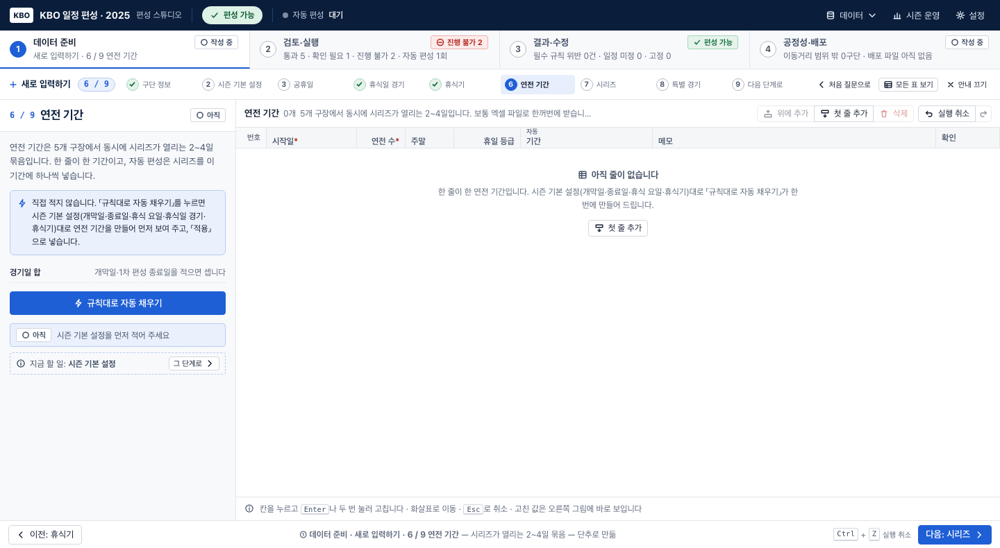
문제 1 · 입력과 확인이 한 띠에 섞임
- 아홉 칸이 같은 모양이라 어디서 손을 대야 하는지 모름
- 사람이 실제로 적는 것은 시즌 기본 설정 4칸 + 특별한 날 몇 줄뿐
- 「다음」이 9 / 9로 세어져 단계가 부풀려 보임
문제 2 · 작은 표 넷이 따로 단계
- 공휴일·휴식일 경기·휴식기·특별 경기는 모두 「날짜에 붙는 표시」인데 네 화면에 흩어짐
- 5/5 어린이날 하나가 공휴일(3) + 휴식일 경기(4) + 휴식기 5/8(5) + 구장 지정(8) 네 곳에 걸림
- 대부분 「다음」만 누르는 단계
문제 3 · 핵심(연전 기간)이 약함
- 규칙이 보이지 않고 「규칙대로 자동 채우기」 단추만 있음
- 달력 없이 표에서 셀을 두 번 눌러 고침
- 시리즈는 규칙으로 만들어지는 결과인데 225줄 표가 먼저 보임
이전 추천안 A5단계 — 입력과 확인을 가르고, 특별한 날은 달력 하나, 연전 기간은 규칙 + 달력
사용자 답변을 모두 반영한 구성입니다. 띠의 칸마다 무엇을 하는 곳인지(확인 · 적기 · 달력에 표시 · 규칙 + 달력에서 고치기 · 확인)를 작은 글씨로 붙여, 띠만 봐도 입력할 곳과 확인할 곳이 갈립니다. 구단 정보(1단계)는 지금 그대로입니다.
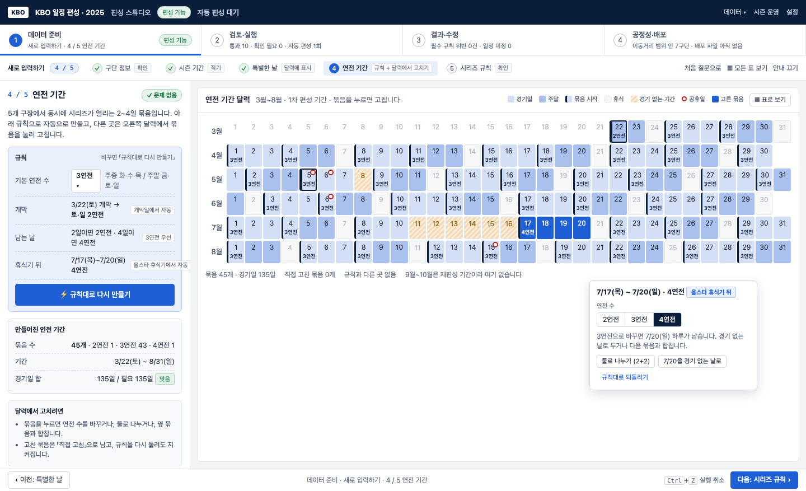
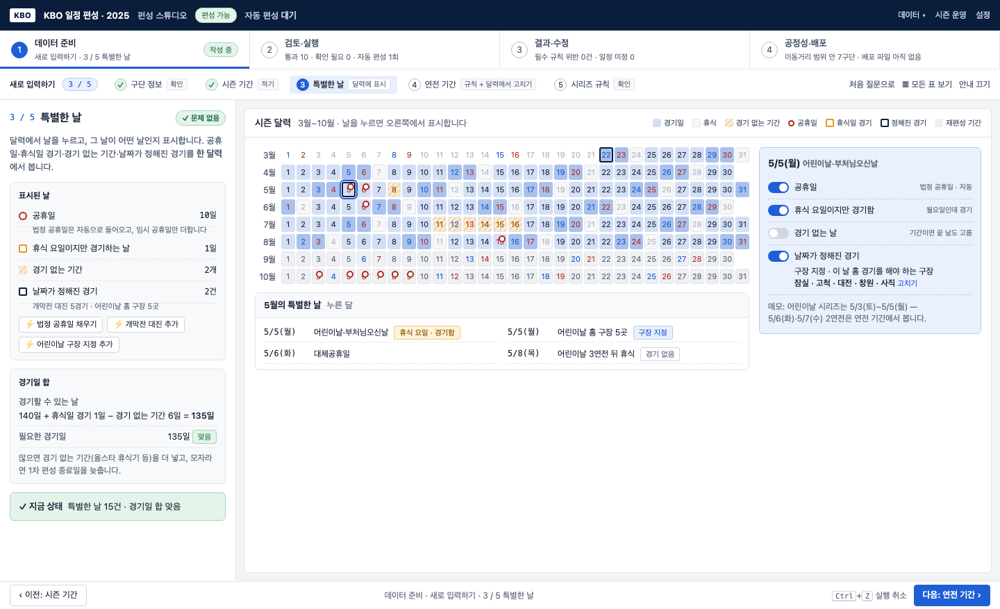
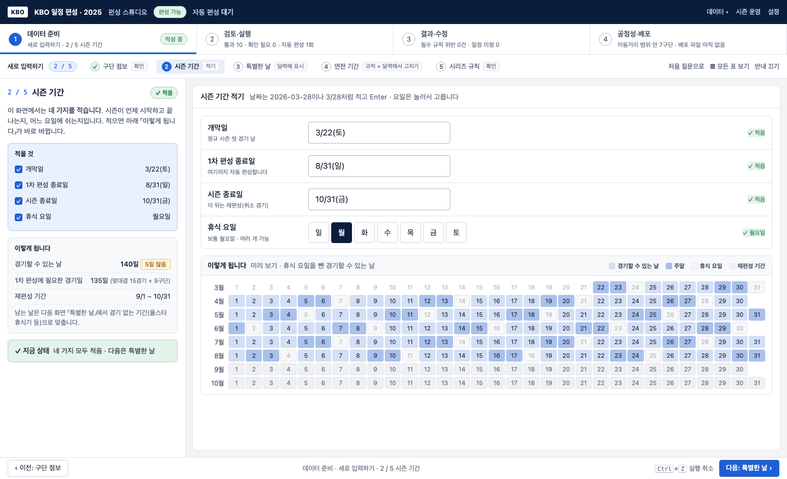
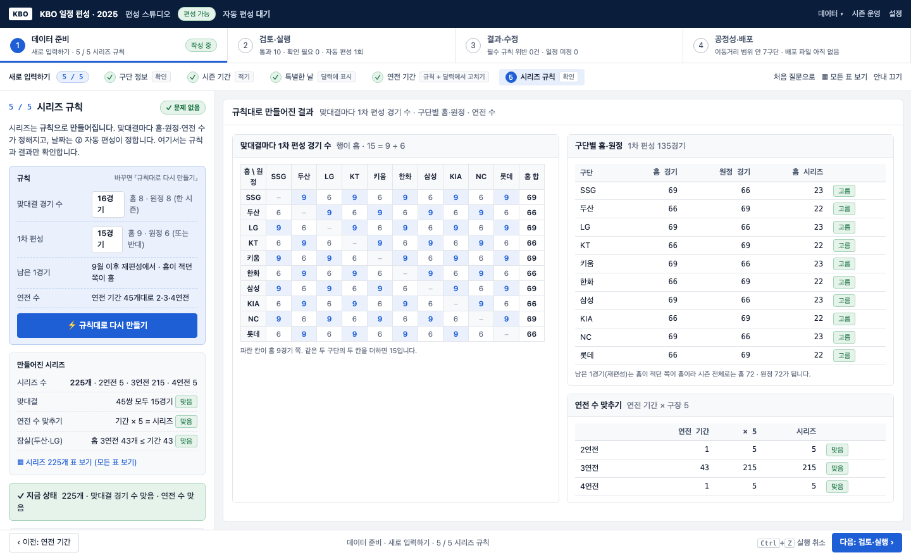
장점
- 띠의 칸이 9 → 5, 칸마다 역할이 적혀 「여기서 뭘 하나」가 바로 보임
- 적는 화면(2)은 적는 화면답게, 만들어지는 화면(4·5)은 규칙이 먼저 보임
- 어린이날처럼 한 날짜에 겹치는 것을 한 화면에서 봄
- 연전 기간을 달력에서 고치고, 고친 곳은 규칙을 다시 돌려도 지켜짐
- 지금 구조(왼쪽 카드 + 가운데)와 주소·점검 도구를 거의 그대로 씀
단점
- 특별한 날 화면이 네 종류를 담아 처음엔 범례를 읽어야 함
- 달력에서 묶음을 고치는 조작(나누기·합치기)을 새로 만들어야 함
- 시리즈 225줄을 직접 손보던 사람은 「모든 표 보기」로 한 번 더 가야 함
누구에게
- 해마다 같은 틀로 편성하는 KBO 담당자 — 바뀐 것만 적고 나머지는 확인
- 처음 보는 사람 — 다섯 칸의 역할 글씨가 안내가 됨
- 전문가 — 「모든 표 보기」는 그대로
대안 B달력 한 장 — 시즌 달력 하나에 적고, 보고, 고치고, 확인
구단 정보 다음은 화면 하나뿐입니다. 왼쪽에 시즌 기간과 규칙을 적고, 가운데 큰 달력에 특별한 날과 연전 기간이 함께 그려지고, 오른쪽에서 경기일 합·시리즈를 확인합니다. 단계가 아니라 「층(공휴일·휴식기·연전 기간…)」을 켜고 끕니다.
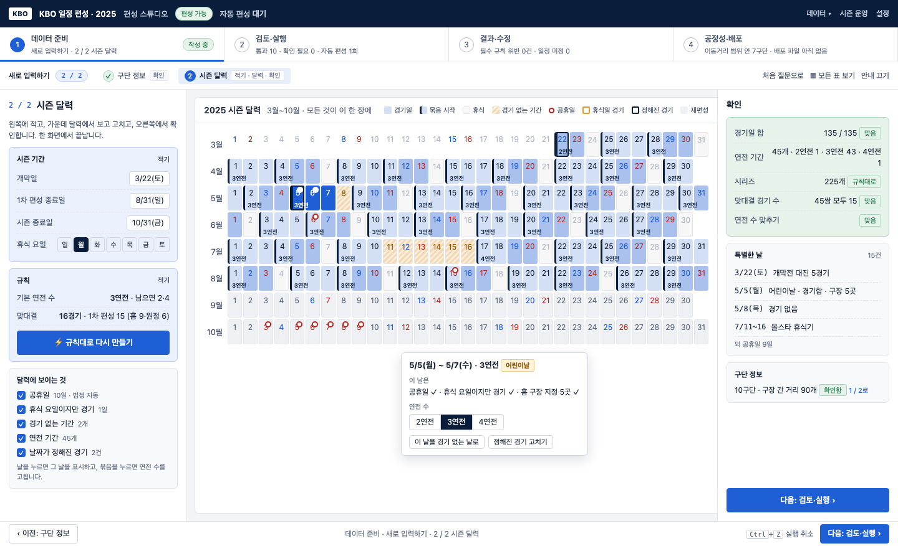
장점
- 무엇을 바꾸면 무엇이 달라지는지 한 화면에서 바로 보임
- 「다음」을 누를 일이 없음 — 익숙해지면 가장 빠름
- 어린이날처럼 여러 표시가 겹치는 날을 자연스럽게 다룸
단점
- 처음 보는 사람에게는 빽빽함 — 무엇부터 할지 순서가 없음
- 1440 폭에서 왼쪽·가운데·오른쪽 셋이 모두 좁음
- 빈 상태(새로 입력)에서는 달력이 텅 비어 안내가 어려움
누구에게
- 이미 흐름을 아는 담당자가 해마다 손보는 경우
- 달력 보는 것이 익숙한 팬·기자
- 처음 입력하는 사람에게는 맞지 않음
대안 C질문형 — 한 번에 한 질문, 답하면 달력이 그려짐
「개막일은 언제인가요?」 「경기가 없는 기간이 있나요?」처럼 열두 질문에 차례로 답합니다. 왼쪽에 답한 것이 쌓이고(「고치기」), 오른쪽에 답한 대로 달력이 그려집니다. 마지막 두 질문에서 연전 기간과 맞대결 규칙을 확인합니다.
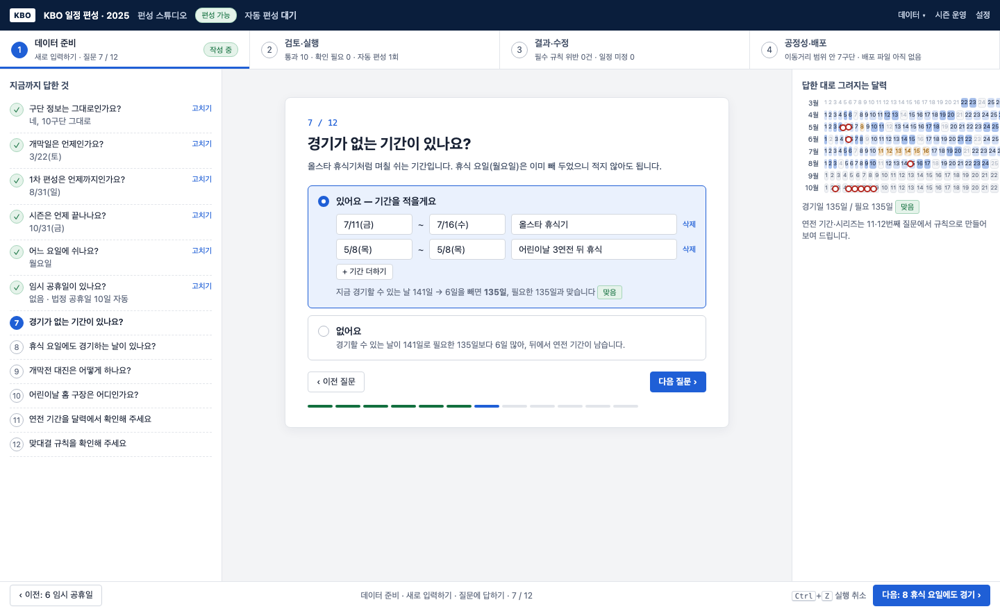
장점
- 입력과 확인이 섞일 여지가 없음 — 질문은 늘 「적는 것」
- 처음 하는 사람에게 가장 쉬움, 빈 상태에서 특히 좋음
- 「없어요」를 고르면 그 뒤가 어떻게 되는지 설명이 붙음
단점
- 열두 번 「다음」 — 해마다 같은 값을 넣는 담당자에게는 지루함
- 기존 데이터를 「보는」 모드가 어색함(답한 것 목록을 다시 훑어야 함)
- 연전 기간처럼 달력을 넓게 봐야 하는 것은 질문 카드에 안 맞음
누구에게
- 처음 써 보는 사람, 체험용·시연용
- 해마다 쓰는 담당자에게는 맞지 않음
- 추천안 A의 「새로 입력」 첫 회에만 붙이는 변형도 가능
대안 D엑셀 중심 — 서식을 내려받아 채우고, 올린 뒤 확인 화면에서 고침
엑셀 서식(시트 4개: 구단 정보 · 시즌 기간과 특별한 날 · 연전 기간 · 맞대결 규칙)을 내려받아 채우고 올립니다. 스튜디오는 시트마다 검사해 「확인할 것」을 보여 주고, 작은 것은 그 자리에서 고칩니다.
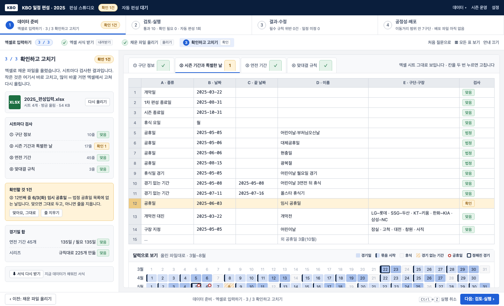
장점
- KBO 담당자가 이미 엑셀로 일함 — 익숙한 도구로 한 번에
- 여러 해·여러 안을 파일로 보관·비교하기 쉬움
- 스튜디오 화면은 「확인」 하나로 단순해짐
단점
- 엑셀 안에서는 안내도 검사도 없음 — 틀린 것을 올린 뒤에야 앎
- 연전 기간 45줄을 엑셀로 적는 것은 규칙으로 만드는 것보다 어려움(서식에 「비워 두면 규칙으로 만듦」이 필요)
- 도구 둘을 오감, 공개 사이트 첫 방문자에게는 문턱
누구에게
- 데이터를 엑셀로 관리하는 담당자, 여러 해를 한 번에 다루는 경우
- 처음 보는 사람·팬에게는 맞지 않음
- 추천안 A에 「엑셀로 한꺼번에 넣기」 입구로 붙이는 편이 나음(지금도 가져오기가 있음)
한눈에 비교
| ★ 추천안 R · 한 화면 | A · 5단계 | B · 달력 한 장 | C · 질문형 | D · 엑셀 중심 | |
|---|---|---|---|---|---|
| 입력 / 확인이 갈리는가 | 왼쪽 적기 · 가운데 달력 · 오른쪽 확인, 화면 하나 | 띠의 칸마다 역할 표시 | 층을 켜고 끄는 것으로 — 갈리지 않음 | 질문은 모두 입력, 마지막 둘이 확인 | 엑셀이 입력, 화면이 확인 |
| 단계 수 | 1 (구단 정보는 접힌 블록) | 5 | 2 | 12 질문 | 3 |
| 특별한 날 | 공휴일+가중치는 표, 홈 구장은 날 눌러서. 휴식기·휴식일 경기는 묶음으로 표현(별도 입력 없음) | 달력 하나 + 날 눌러 네 가지 | 같은 달력 위의 층 | 질문 6~10 | 시트 ②에 줄로 |
| 연전 기간 | 규칙으로 채우고 끌어서 2·3·4연전, 계수기 「경기일 / 135」 | 규칙 카드 + 달력에서 고치기 | 달력 위의 층 | 질문 11 | 시트 ③ 45줄 |
| 시리즈 | 오른쪽 확인 칸(규칙 2줄 + 225개 ✓) | 규칙·결과 요약 화면 | 확인 칸 한 줄 | 질문 12 | 시트 ④ |
| 엑셀 · 튜토리얼 | 같은 화면의 단추 — 채워진 서식 왕복 · 처음 한 번 따라 하기 | 가져오기 메뉴 | — | — | 엑셀이 중심 |
| 처음 쓰는 사람 | 따라 하기로 보완 | 좋음 | 어려움 | 가장 좋음 | 어려움 |
| 해마다 쓰는 담당자 | 가장 빠름(엑셀 왕복) | 좋음 | 가장 빠름 | 지루함 | 좋음 |
| 지금 코드에서 바꿀 양 | 큼 — 묶음 달력 편집 + 가중치(코어) + 엑셀 읽기 + 따라 하기 | 중간 | 큼 | 큼 | 중간 |
확인이 필요한 것 (KBO 관행 — 추측하지 않고 묻습니다)
- 화·수·목 3연전 / 금·토·일 3연전, 월요일 휴식. 개막 3/22(토)~23(일) 2연전, 3/24(월) 휴식, 3/25(화)부터 3연전.
- 어린이날 5/5(월) 경기 — 5/5~5/7 월·화·수 3연전, 5/8(목) 휴식, 5/9(금)부터 다시 금·토·일.
- 올스타 브레이크 7/11(금)~7/16(수), 7/17(목)~7/20(일) 4연전.
- 1차 편성은 8/31(일)까지. 표 끝에 「미편성」 45경기(맞대결마다 1경기, 구장 정해져 있음)가 따로 있음 — 맞대결 16경기 = 1차 15 + 미편성 1.
- 공식 표의 색: 토요일 파랑, 일요일·공휴일 빨강(5/5·5/6·6/6·8/15). 시안의 달력도 같은 색으로 바꿈.
- 연전 기간 규칙: 주중 화·수·목, 주말 금·토·일 3연전이 기본이고 월요일 휴식이 맞는지. 시안의 「기본 연전 수 3연전」 규칙 한 줄이 충분한지, 아니면 「주중/주말 따로」가 필요한지.
- 개막 2연전: 2025는 토요일 개막이라 토·일 2연전이 자동으로 나옵니다. 개막이 금요일이면 금·토·일 3연전이 되는데, 그래도 2연전으로 고정해야 하는지(그렇다면 규칙에 「개막은 2연전」을 따로 둡니다).
- 개막 2연전 뒤 흐름: 3/24(월) 휴식 → 3/25(화)부터 3연전이 맞는지.
- 올스타 휴식기: 2025 데이터는 7/11(금)~7/16(수) 6일, 뒤에 7/17(목)~7/20(일) 4연전입니다. 해마다 길이가 같은지, 휴식기 뒤 4연전이 관행인지.
- 맞대결 경기 수: 「16경기, 홈 8·원정 8」은 시즌 전체이고, 지금 데이터의 1차 편성은 15경기(홈 9·원정 6, 또는 반대)이며 남은 1경기는 9월 이후 재편성에서 홈이 적던 쪽이 홈입니다. 시리즈 규칙 화면에 이 두 줄을 그대로 보여 주면 되는지.
- 어린이날: 5/5가 월요일이면 경기, 5/8(목) 하루 휴식 — 해마다 같은 관행인지, 아니면 그 해 달력에 따라 다른지.
- 임시 공휴일(선거일 등)에 경기를 하는지 — 공휴일로 표시만 하고 경기는 하는 것으로 두었습니다.